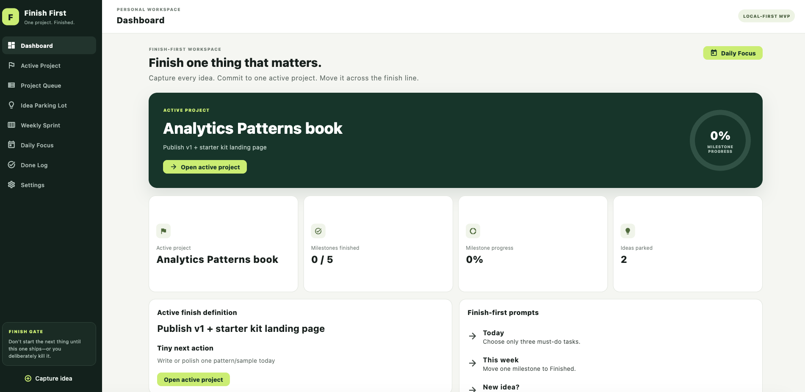

Capture without switching
Put distracting ideas in the Idea Log, then return to the project already in motion.
Capture every idea without chasing every idea. Commit to one Active Project, define the finish line, and keep the next action visible.
See how it worksExplore features
Finish First is deliberately smaller than a general task manager. Its purpose is to reduce project switching and help you carry one meaningful project across the finish line.
Put distracting ideas in the Idea Log, then return to the project already in motion.
Keep a clear finish definition, milestones, and a tiny next action for the Active Project.
Version 1.0 stores working data on your device. No account or cloud synchronization is required.